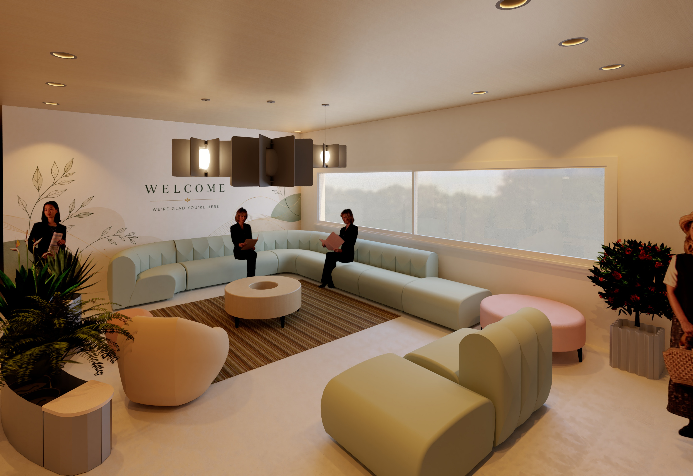

Opus Elevare — Mixed-Use Restaurant & Residential Design
Multi-level mixed-use design for celebrity chef Makoto Okuwa in Hayes Valley, San Francisco. Includes restaurant, residential loft, library, rooftop amenities, facade materials, reflected ceiling plans, lighting, HVAC coordination, furniture, and bathroom design.
View Case Study
Serenity Senior Living
"Rooted in Nature, Nourished by Community" — Schematic design for a ~12,500 SF senior active living facility featuring biophilic design, lobby, library, dining, adjacency diagrams, universal design, and FF&E selections.
View Case Study
Tentacle Folly — Architect's Folly Design
A sculptural sea-chamber on the San Juan Islands, inspired by Smiljan Radić's poetic method and Tennyson's "The Kraken." Four modular GFRC tentacle ribs wrap a bioluminescent pause chamber with an oculus framing the sky. IIDA and Architecture Masterprize 2026 competition entry.
View Case StudyResidential Space Planning
800 x 500
Residential Space Planning & Circulation Study
Scaled floor plans with furniture layout, human comfort dimensions, circulation paths, functional zoning, and universal-design principles for residential living.
View Case StudyRevit Documentation
800 x 500
Revit & Technical Documentation
Developing proficiency in Revit for interior documentation including floor plans, reflected ceiling plans, elevations, sections, schedules, and sheet organization.
View Case StudySketchUp Visualization
800 x 500
SketchUp Interior Visualization
3D modeling to communicate spatial volume, material palette, natural light, and furniture scale. Visual storytelling for client communication and design development.
View Case StudySustainable Materials
800 x 500
Sustainable Materials & Healthy Interiors
Research into Red List-Free materials, Declare database, healthy finishes, environmental impact, and evidence-based material selection for human wellbeing.
View Case Study